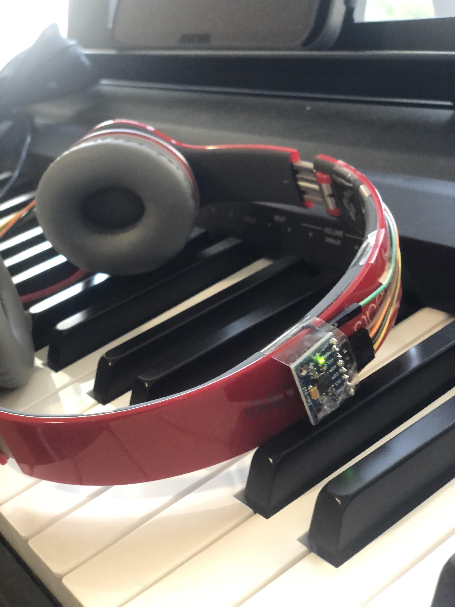
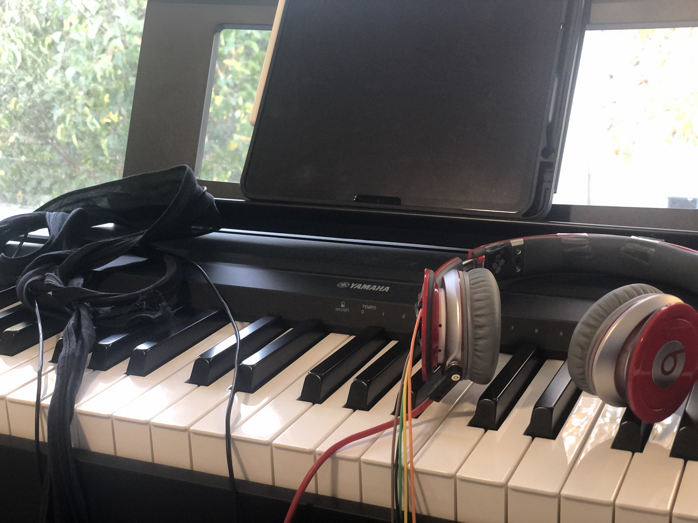

This Music visualizer represents difference between every single pianists in the world.
Some people tend to prefer certain pianist’s interpretation, and some other people prefer different interpretation.
This is a project to make it in a form of data and visualize it, so that we can
see the difference between style of pianists in a visual way.
I was always curious about the fact that different pianists have
different nuance of music depend on interpretation.
+
Want to figure out what makes difference!
- Diagram
Every parameters are for datafication to make graphic of pianist’s physical attributes.
1. To make experience easy as possible
2. To represent 2 key information of each musicians.
- Action / Movement
- Tempo
3. To see difference between pianists
- Environment Setting
Had to rethink about it because the musician might be affected by the visual, and that might going to be the disturbance.
WEEK 11, Start visualizing & Draw a roadmap
- Storyboard
Each musician get the box of kit, and connect those into their piano. They can get a video, img, and also can broadcast the live performance too.
Option 1, sensor attatched to the hat
Pros: Can get the vibrant acc&gyro parameters Cons: Noooooot fancy
Option 2, sensor attatched to the chest belt(back)
Pros: Can develope to a good looking kit Cons: Can't get gyrometer x value
- Roadmap
Week 10
Storyboarding
Visual concept finalize (try to experiment what I can do)
Connect sensors to the board
Upload reading to blog (wk 3?)
Update blog about the experiment
Week 11
Visal system building(at least 50%)
Start connect board to the system
Update blog
Week 12
Visual system build(finalize)
Finalize connect board to the system
Update blog
Week 13
Entire system improvement
Debugging
Film & update blog
Week 14
Final presentation
- Visual Setting: 3D space
To integrate all of the parameters into one canvas, I used 3D space and represent note by placing spheres.
In this code, which is using just MIDI information now, velocity decides x position, note pitch decide y position and color.
- Example
WEEK 12, Connect with sensors
- Process
- Onboarding process
- Prototyping demo
- Outcome 10x
WEEK 13,Dig the world we make / Unexpected Error?
- Device Update
After the demo, I felt having hat with my system was not the best choice.
There are three reason why I think that was bad even though it was cute. First, The value was too different because sensor couldn't stay on the top of my head. Second,
There were too much going on from my head because I had to wear wired earbuds for keyboard, also bini with looots of lines. Third,
I couldn't imagine evey pianist would wear a bini, especially the same bini...
So I struggled to find alternative device to put my sensor, on top of my head, and I could find one! It was..headset!


- Unexpected Error
For me, this week was the week of struggling. I will share my mistakes and errors that I've faced and how
I solved it!
First Error: Particle board
Getting through this term, I felt some pros and cons of Particle board.
It is good because there is embeded functions like Wifi, Bluetooth, Networking.. I felt it is really good when I did project 3.
But the problem was I feel like it needs more delicate owner. I have two particle boards and both of them didn't work this week.
It is probably because I am a person who upload code right after simple checking.
I ended up with using Arduino, which was because I used it when I got the error and after that I didn't have enough time to change board)
Second Error: Never Update your System
This week I also updated my macOS.. After update I was really happy with new UI and sound of new macOS Big Sur.
However my system wasn't working at all after the update. I didn't know that it was because of the update at the first time,
and spent so many time just fixing my code. I just thought I changed something and it affected my whole code.
But It revealed because of the update. I learned throughout this time, never update system during the term!
Third Error: Attractive ToxidLibs..
ToxicLibs, which is the physics library of processing, is not guity. I am the one who is guilty because I was
so obsessed with this great library and spend so much time experimenting it, playing with it, and trying to put it in my code.
Without Maxim's advice that I should prepare plan B, I would probably have been trying until now.
FINAL WEEK! Result!
- Highlight Reel
Highlight Reel of the every visual experiment I tried.
- On boarding process: Calibration
This kits are designed to be tried by multiple people.
There was a problem that I won't be able to refine code every single time based on the value the program get.
It also happened to me throughout the project, because of the value acc&gyro sensor get is different every single time.
So I made this Calibration Application first so not only I can use it, but also the future users can.
- Plan B
After the failure of embeding Toxiclibs, I started to work on different visual experiment using the code that was working.
First one was going back to the rotating version, and put the rotation out, and placed element using acc&gyro sensor.
I took a 2 video playing same music, which is 'Graceful Ghost Rag',
and played one with a steady posture, one with a movement..
This had some problem, which is it can show the difference but it would be hard for a
pianist who play without movement, as time goes by, it gets hard to notice every note.
Also, color was limited because of the fact that color was controlled by a pitch information.
A lot of music compositions have their certain area of notes throughout one music, so it could give some mood but
also it was hard to give some variety of color and also meaning of every note.
- Plan C?!
So, first I execute plan C. I played twice again, and this time I add some movement to spheres.
This experiment was great because the movement starts when the note is pressed -> So every note moves differently, so that
It can identify when the note is pressed(seemlessly), and also it could give some variety.
Also this time, I used breath sensor to define color. So Inhale makes warmer color, exhale makes cooler color.
Which was fun to see because even though I played the same music, I tend to be calmer when I play without big motion(which I prefer), so the
color tend to be cooler than the big motion one, I gets too excited and felt tension because I didn't want to make a mistake while I play with movements.
It is also fun that even the spreaded one have green elements in the middle, which is my safe zone.
- Plan D?!?!?!?!
Now it is time to add some time aspect!
I got little bit used to move when I play the piano. So now I could see the variety of colors.
Now it was time to add time aspect of the music.
With a variable that grows every single frame, the X position of element is changing.
So the idea was slower music with broader space, and faster music with narrower space. And it was successful showing evey elements!
🎄 Christmas edition
I had so much fun working with this project. I feel like this has a lot of potential in it, and so exciting to see how far it will go.
This is one of the fun try that I did, Christmas Edition! This is called...... Music Tree!
Future Iterations
To be continued.. I will continue this to work with real pianists!


.jpg)
.jpg)
.jpg)
.jpg)
.jpg)
.jpg)
.jpg)
.jpg)